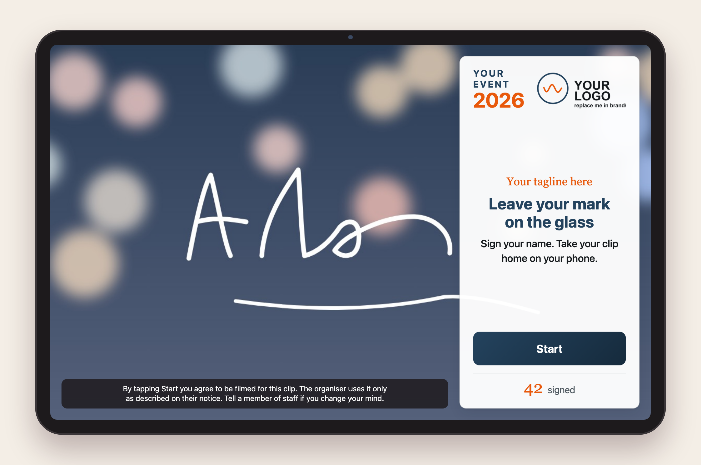
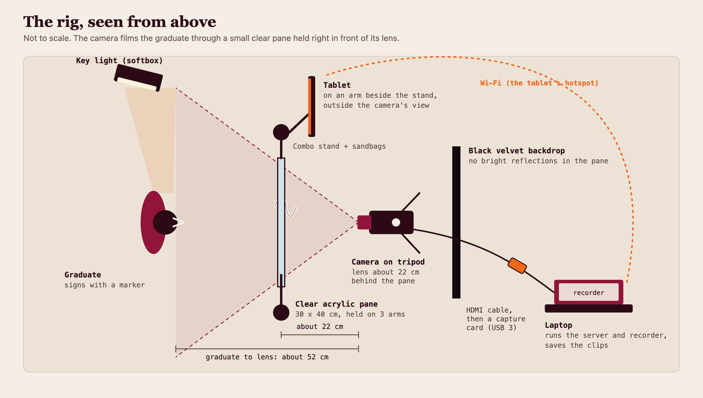
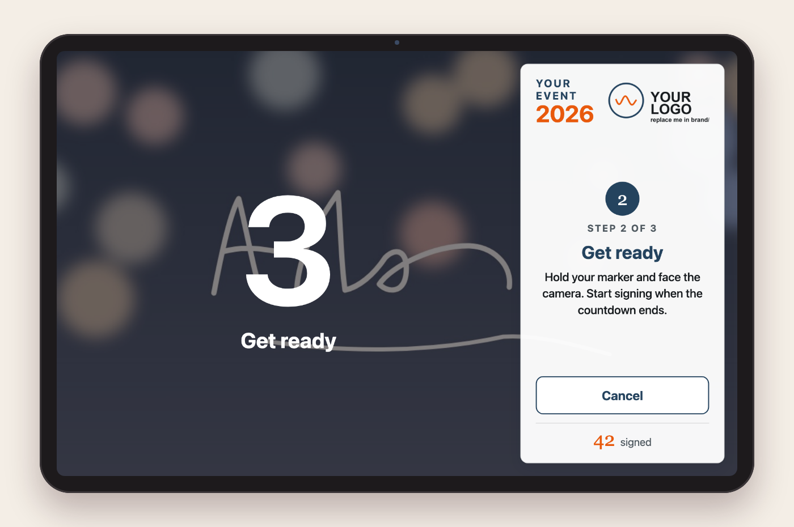
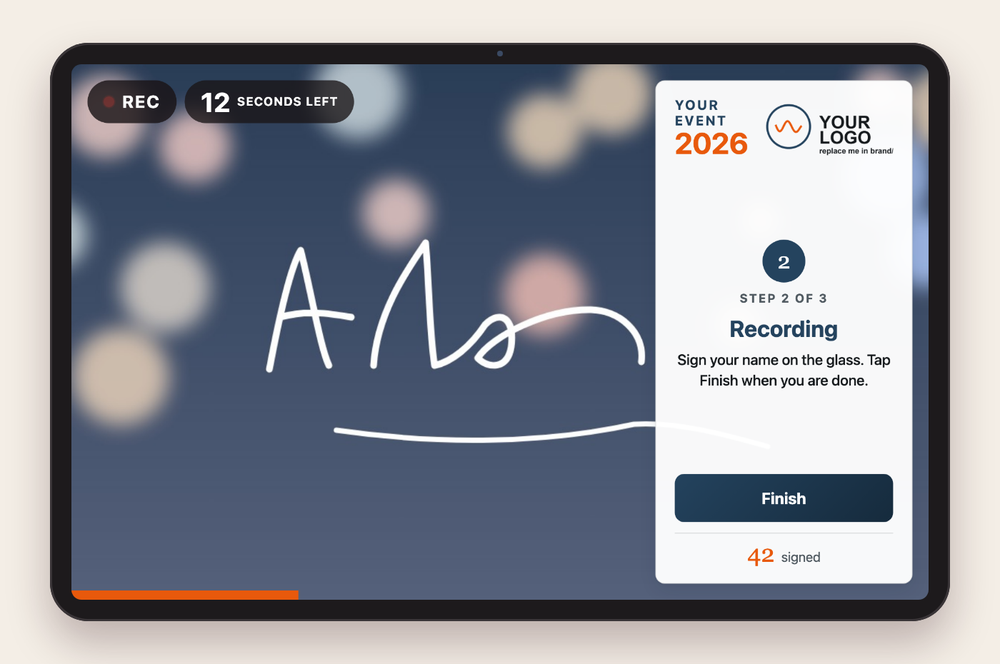
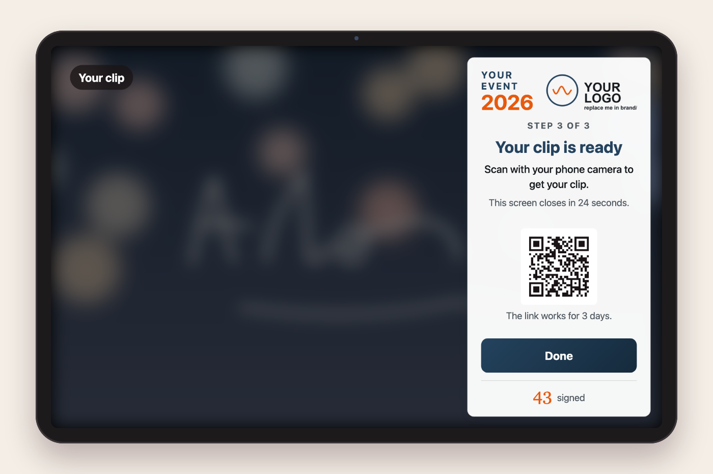
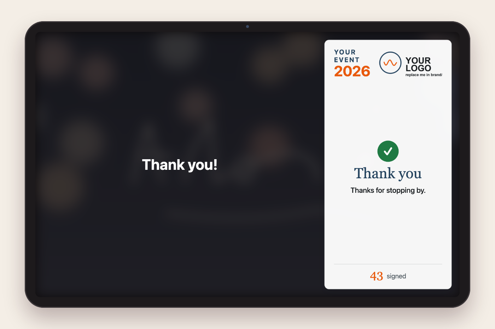
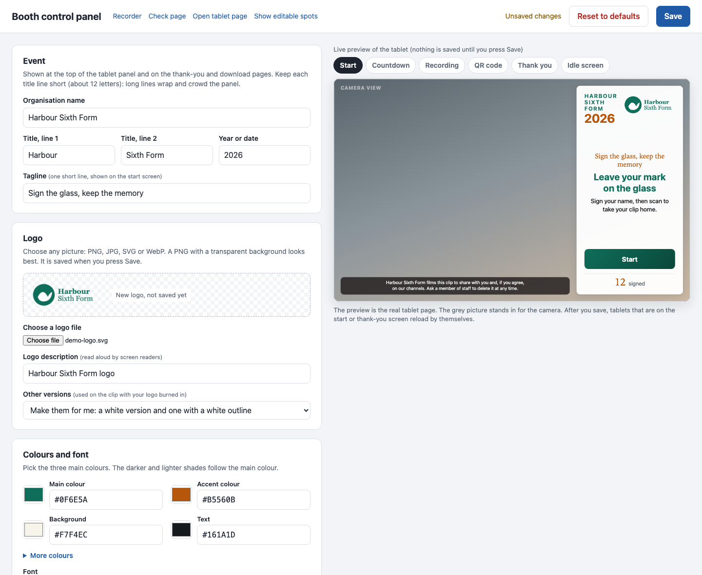

A graduate signs their name on a clear acrylic pane. A camera behind the pane films them. A tablet tells them what to do. At the end they scan a QR code and take the clip home on their phone.
It runs on one laptop, with Node.js and Chrome. There is no account to make and no service you have to use. A control panel on the laptop lets you set your own logo, title, colours and wording, with a live preview.


A small 30 x 40 cm acrylic pane sits about 22 cm from the lens, on arms from two light stands. The graduate stands about 52 cm from the lens and writes on it. The camera sees the writing from behind, so the program flips the clip to read correctly.
The tablet is on its own arm, outside the camera's view. A soft light aims at the person, and a black cloth behind the camera stops reflections in the pane. The full kit is on the next page.
Start Booth.command (Mac) or run the Linux script./control and set your logo, colours and wording.QUICKSTART.md.

Nothing is required by name. The program needs a camera the browser can see, a tablet with a browser, and a laptop. Swap = easy substitute. Optional = can be left out. Full table: EQUIPMENT.md.
| Part | Used here | Notes |
|---|---|---|
| Camera | Sony ZV-E10, 16-50 mm kit lens at 16 mm, movie mode | Swap: any camera with clean HDMI out, or a good webcam |
| Camera power | KingMa NP-FW50 dummy battery on a 20 W USB-C charger | Optional for short sessions |
| Capture card | UGREEN 4K60 USB-C HDMI card (USB 3.0, 1080p) | Swap: Elgato Cam Link 4K. Avoid USB 2.0 dongles |
| HDMI cable | Vention micro-HDMI to HDMI, 3 m | Tape it down so a pull misses the camera port |
| Tripod | Manfrotto 190XPROB, 496RC2 ball head | Lens at face height |
| Pane | Clear acrylic, 30 x 40 cm, 4 mm, polished edges | 6 mm is stiffer; foam pads on the grips |
| Stands and arms | 2 x Meking MF-3400F combo stands, 4 x MB-42 magic arms, about 8 super clamps, 8 x 5 kg sandbags | Three arms hold the pane, one holds the tablet |
| Tablet | Samsung Galaxy Tab S8 Ultra, SmallRig 2930 mount | Swap: any tablet with a browser |
| Laptop | MacBook Pro 13 in (2017), four USB-C ports, Chrome and Node.js 18+ | Swap: Linux laptop. Optional: USB-C hub |
| Wi-Fi | The tablet's own hotspot | Laptop and tablet on the same network |
| Key light | amaran P60c with softbox and grid, mains supply | Aim at the person, not the pane. Optional: white fill board |
| Backdrop | Black velvet cloth behind the camera, plus a card hood on the lens | Did more than any other fix against reflections |
| Backup copy | 32 GB exFAT USB-C stick | Optional. Plan B video: the camera's own USB-C, 720p |
| Cleaning | Window or dry-erase markers, ammonia-free cleaner, microfibre cloths, squeegee | Ammonia clouds acrylic. Test markers first |
| Odds and ends | Extension lead, gaffer tape, floor tape for the standing spot |
rclone config.

Open http://localhost:8080/control on the booth laptop. Change the logo, event title, colours, font, wording, consent text, countdown and recording length, and watch a live preview of the tablet. Nothing is saved until you press Save. Reset puts the standard look back.

It only opens on the laptop itself. It saves to brand/brand.json, PNG logos in brand/ and booth-settings.json, so you can still edit by hand. Add ?marks=1 to a page address to outline every spot that comes from the settings.
The booth films faces and hands out a link. That is personal data in most places, and you are the organiser. Write your own consent wording: who films, what the clip is for, how long you keep it, who to tell if someone changes their mind.
Check the law where you are, for example the PDPA in Singapore or GDPR in the EU and UK. Take extra care with minors.
The program asks for no names, emails or phone numbers. Links use a random code. Clips stay in the folder you choose, plus Google Drive if you sync that folder. Nothing is sent to the author.
Decide when to delete clips, and be able to remove one on request. This is plain guidance, not legal advice.